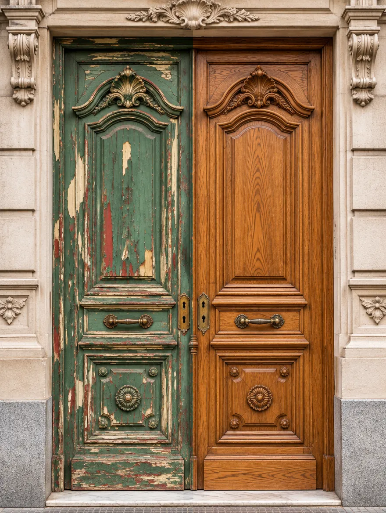
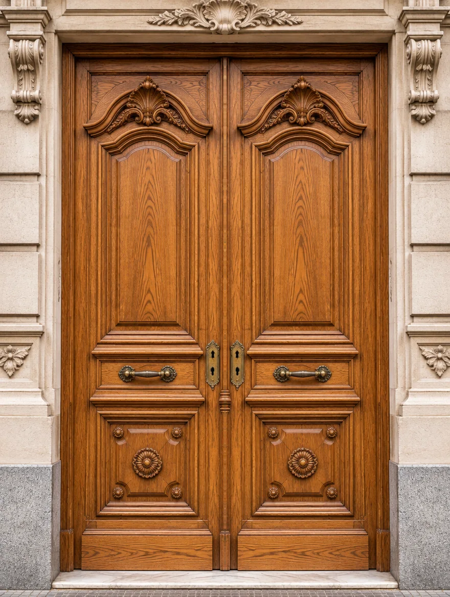
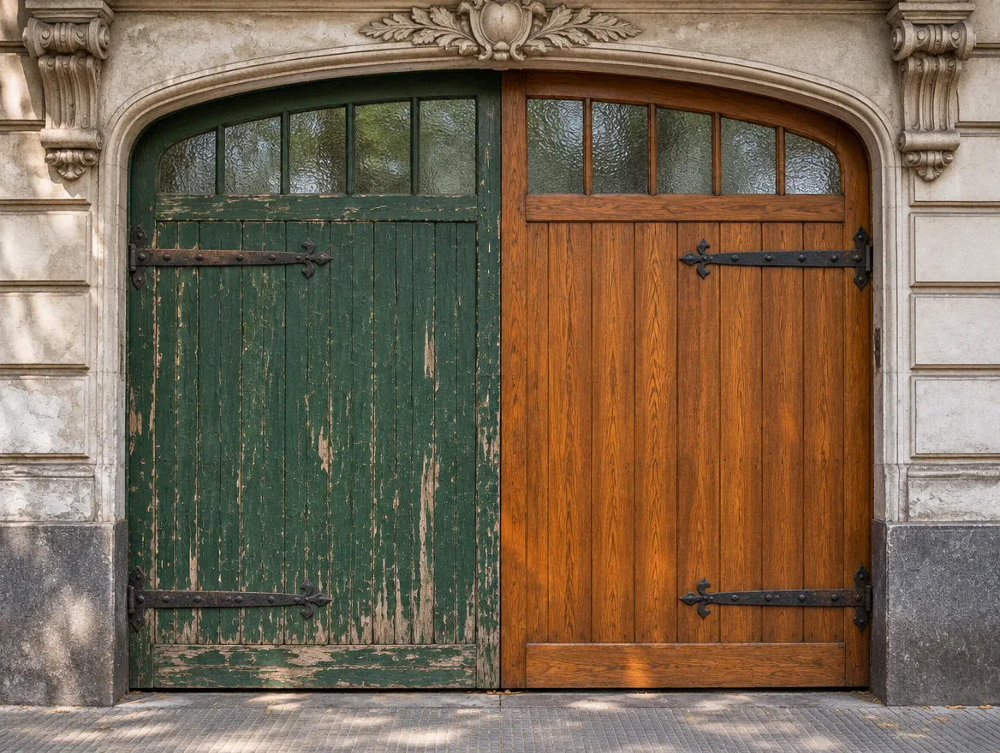
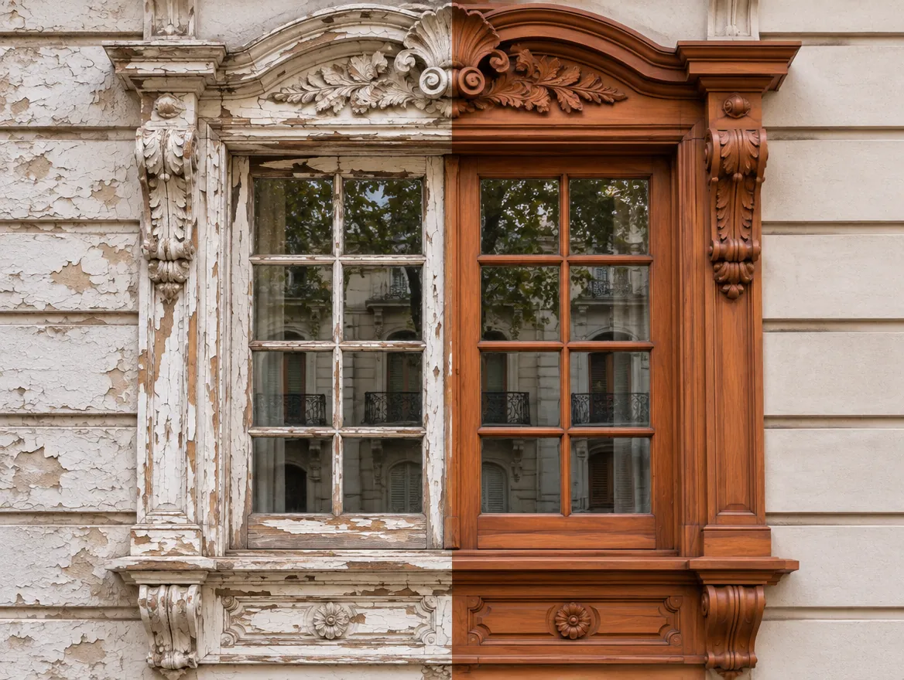
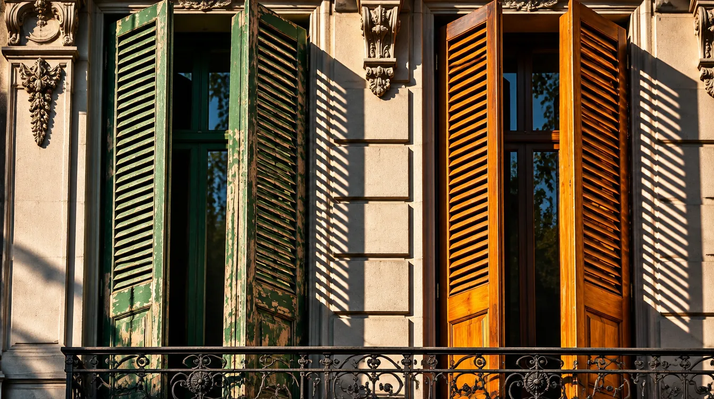
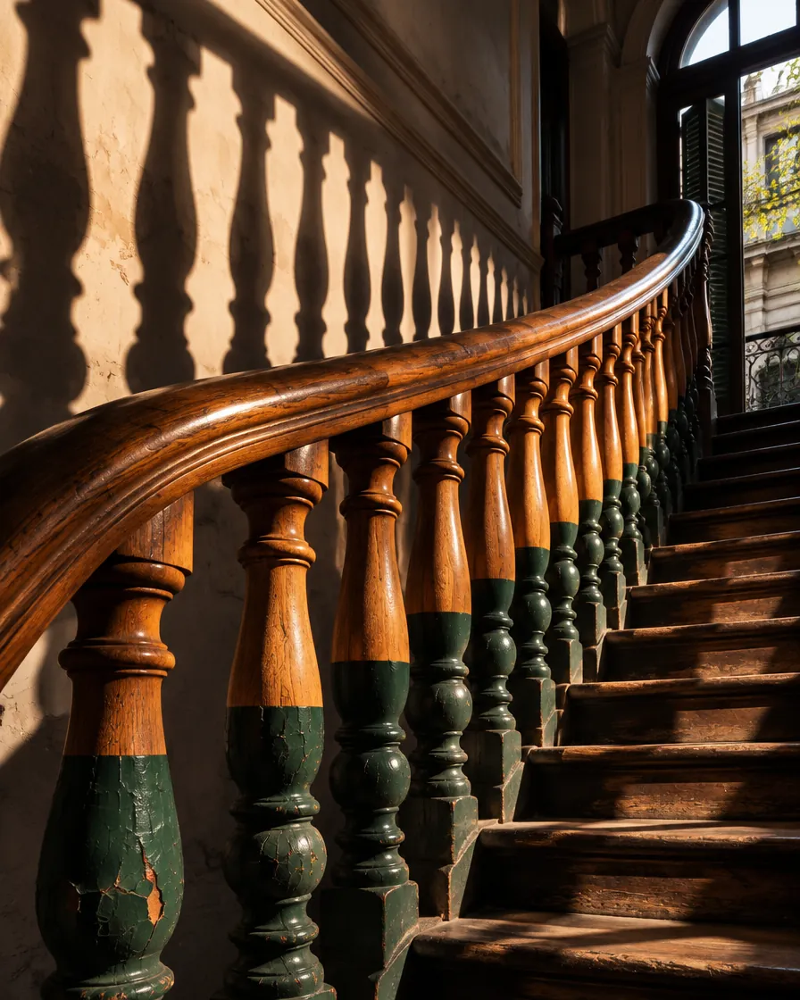
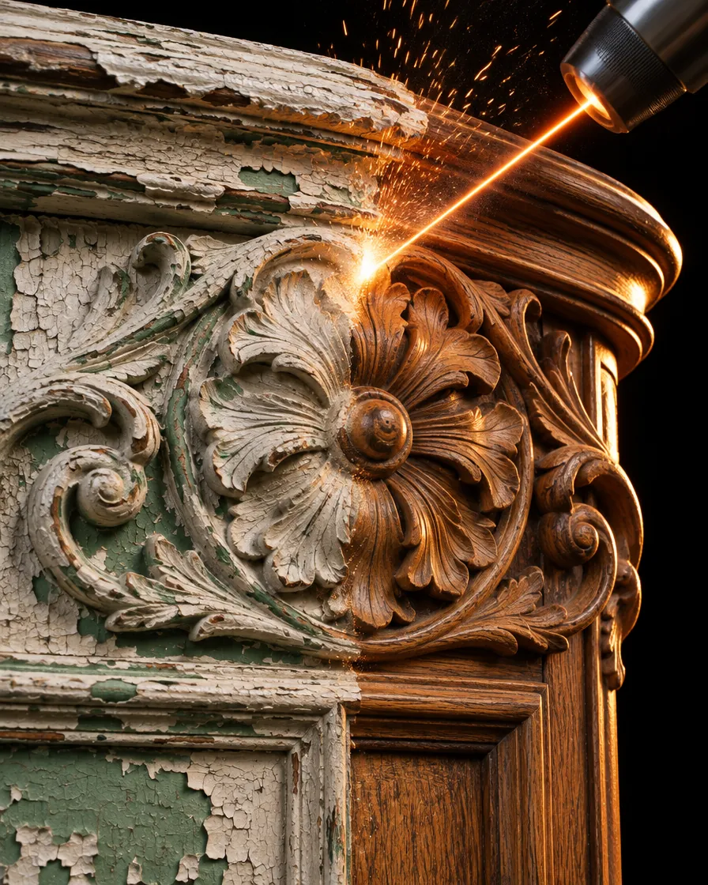
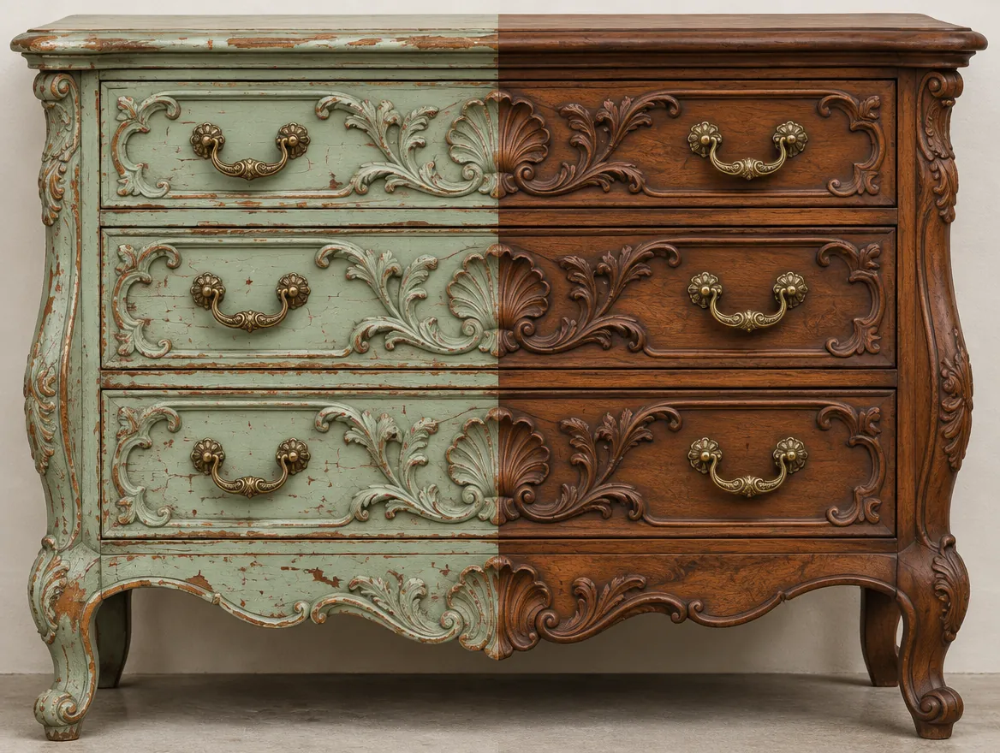
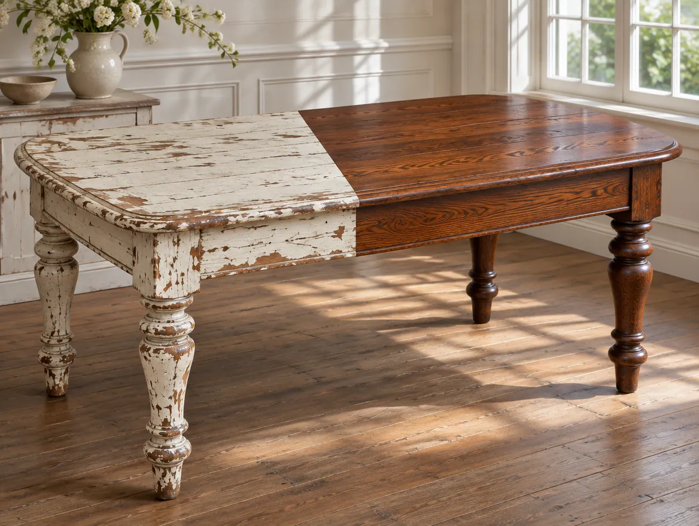
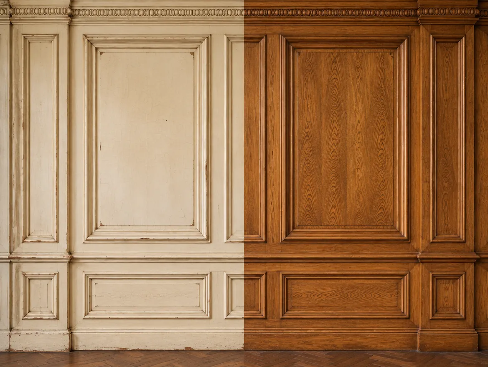

Puertas
De entrada, interiores y de casa chorizo
Te podría contar lo maravilloso que somos, nuestra increíble trayectoria de más de 250 años, nuestra incomparable experiencia y bla bla bla...
Decapado láser de puertas, ventanas, postigones, muebles y escaleras. Sin lija, sin químicos y sin el clásico sarasa sasa.

¿Viste esa puerta, esa mesa o esa escalera que tiene tantas manos de pintura que ya ni te acordás de cómo era originalmente?
Bueno, ahí entramos nosotros.
Con tecnología láser de última generación retiramos pinturas y barnices viejos para dejar nuevamente la madera al descubierto, siempre que sus condiciones lo permitan.
Nosotros nos ocupamos de descubrir la madera. Pero si después querés ir más allá, reparar, relustrar, renovar tapizados o devolverle a ese mueble todo su esplendor, podemos ponerte en contacto con restauradores especializados.
Porque cada oficio tiene su arte, y nos gusta que cada cosa quede en buenas manos.
Y aunque no hacemos magia, ver cómo vuelve a aparecer la madera tiene algo de mágico.
No cambiamos lo que tenés. Te ayudamos a redescubrirlo.
El servicio no incluye reparaciones, lustrado, pintura posterior ni tapicería. Para esas tareas podemos ponerte en contacto con restauradores especializados.
Vamos aclarando el panorama… Como ya te mencioné, decapar es quitar la pintura, el viejo lustre, para que te reencuentres con la madera al natural y te vuelvas a enamorar de ese noble material, ahora al descubierto, y así vuelvas a sentir ese inconfundible olor a madera.
Lo hacemos en puertas, ventanas, postigones, mesas, sillas, escaleras, barandas y muebles en general que, por lo general, son guardianes de recuerdos.
«A veces, para renovar algo, no hace falta agregarle nada. Basta con quitar lo que lo tapa».

De entrada, interiores y de casa chorizo

De tablas, con herrajes de hierro

Marcos y vidrio repartido, sin desmontar

Postigos y celosías

Balaustres torneados y pasamanos

Relieves con décadas de pintura

Muebles con tallas y herrajes

Patas torneadas y tapas

Boiserie y paneles de pared
Imágenes ilustrativas del proceso; no corresponden a trabajos realizados por Veta.
Tecnología de última generación, ajustada a cada pieza.
Y llegamos a la parte más aburrida: explicar cómo funciona.
Básicamente, un equipo láser emite pulsos de luz extremadamente breves y concentrados que actúan sobre las capas de pintura o barniz, permitiendo retirarlas progresivamente y dejar la madera al descubierto.
La potencia, la frecuencia y otros parámetros se ajustan según el material y el recubrimiento. Todo un proceso tecnológico bastante sofisticado.
Podríamos seguir hablando de frecuencias, nanosegundos, energía y otras maravillas de la física...
Pero, entre nosotros, es mucho más interesante verlo que explicarlo.
Quiero verlo en mi maderaCada madera tiene su historia. Cada trabajo, su presupuesto.
Nos encantaría darte una cifra ahora, pero cada trabajo es diferente porque depende de varias cosas, como qué tipo de material tiene, cuántas capas, etc. Lo que sí podemos asegurarte es que no vas a tener que hacer cuentas: de eso nos ocupamos nosotros.
Contanos qué querés decapar, mandanos unas fotos y algunas medidas aproximadas.
Te preparamos un presupuesto aproximado y, si es necesario, podemos coordinar una pequeña prueba para que veas cómo trabaja el láser sobre tu madera.
Vos consultás. Nosotros te asesoramos. Y después comparás y decidís.
Quisiera un presupuesto estimadoMandanos las fotos por WhatsApp. Con algunas medidas aproximadas alcanza para empezar.
Siempre que sea técnicamente posible, hacemos una pequeña prueba antes de comenzar el trabajo, para que veas con tus propios ojos cómo responde tu madera al láser.
No queremos convencerte con palabras. Preferimos que la prueba hable por nosotros.
Y después, vos decidís.
Consultar por una pruebaVos consultás. Nosotros te acompañamos.
Conversamos, miramos las fotos y revisamos las medidas aproximadas de la pieza.
Preparamos un presupuesto personalizado y, cuando es técnicamente posible, coordinamos una pequeña prueba.
Si el resultado te convence, acordamos dónde y cuándo hacer el decapado.
Lo que más nos consultan antes de empezar.
Sí, nos parece perfecto. Nosotros también preferimos mostrar antes que prometer. Por eso, siempre que las condiciones lo permitan, podemos hacer una pequeña prueba sobre tu propia madera, para que veas cómo responde al decapado láser. Y si el resultado te convence, seguimos adelante. Así de simple.
Buena pregunta. Por eso preferimos PROBAR antes que PROMETER. Cuando sea posible, hacemos una pequeña prueba sobre tu madera y vemos juntos el resultado. Sin magia. Sin discursos. Con una demostración real.
Nos ocupamos de descubrir la madera mediante el decapado. No hacemos lustrado, pintura posterior, tapicería ni reparaciones. Si querés seguir con la restauración, podemos ponerte en contacto con especialistas.
La respuesta depende de la madera, su estado y el recubrimiento. Ajustamos la potencia, la frecuencia y los demás parámetros para cada trabajo. Por eso evaluamos la pieza y, cuando es posible, hacemos una prueba antes de avanzar.
Retirar un recubrimiento con láser puede generar humo y partículas. Antes de trabajar evaluamos la ventilación, la extracción y las medidas de protección que requiere el lugar.
Depende del tamaño de la pieza, el recubrimiento, la cantidad de capas y los detalles. Te orientamos sobre los tiempos después de evaluar el trabajo.
Lo coordinamos antes de la visita según la pieza y el espacio. Te indicamos qué despejar, qué proteger y qué condiciones necesitamos para trabajar.
Tenemos taller en Olivos y evaluamos trabajos a domicilio en Vicente López, San Isidro, San Fernando y CABA. Para otras zonas, consultanos.
El mínimo es de cuatro horas de láser. Si tenés varias piezas chicas, podemos evaluarlas juntas para la misma visita.
Cada recubrimiento responde de una manera distinta. Nos contás qué querés decapar, evaluamos sus condiciones y, si es necesario y técnicamente posible, hacemos una prueba antes de confirmar el trabajo.
Trabajamos con tecnología láser de última generación, pero conservamos algo de antes… la costumbre de escuchar, conversar y atender personalmente a cada cliente.
Si preferís hablar con una persona, dejanos tu teléfono y te llamamos a la brevedad.
Pero si te resulta más cómodo, contanos por WhatsApp qué necesitás y te responderemos por la misma vía.
Vos elegís cómo comunicarte. Nosotros nos ocupamos del resto.